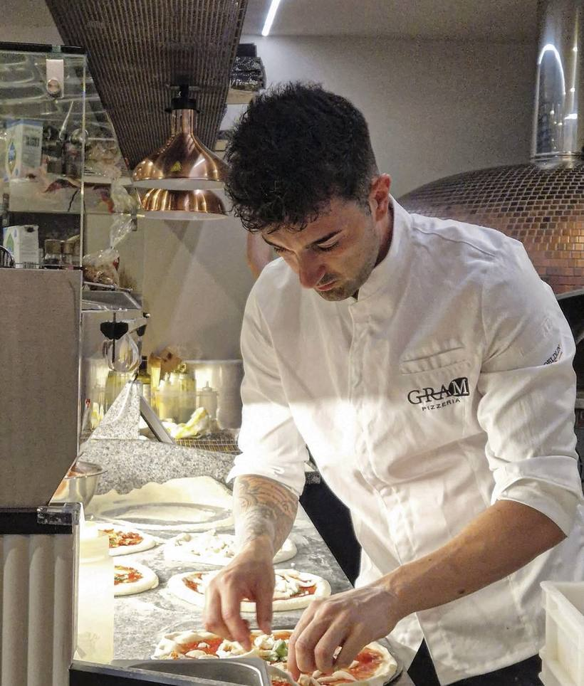

Via San Gennaro · Santa Maria di Castellabate · Cilento
Qui conta la misura.
Ci chiamiamo Gram perché pesiamo tutto: la farina, l'acqua, il sale, le ore. È l'unico modo che conosciamo per fare la stessa pizza buona a febbraio e nel secondo sabato d'agosto.

—
Cucina fino alle 23:30
+39 350 089 6171
Come lavoriamo
Quarantotto ore prima che vi sediate.
L'impasto di stasera è stato pesato l'altro ieri. Riposa in cella a temperatura controllata perché il glutine si rilassi e gli amidi diventino zuccheri: è quello che rende il cornicione leggero e digeribile, non un trucco del forno.
Un assaggio
Dieci pizze, non trenta.
Meno referenze significa merce che gira in due giorni e un banco che non sbaglia nelle sere piene. Quello che cambia di settimana in settimana è scritto sulla lavagna.